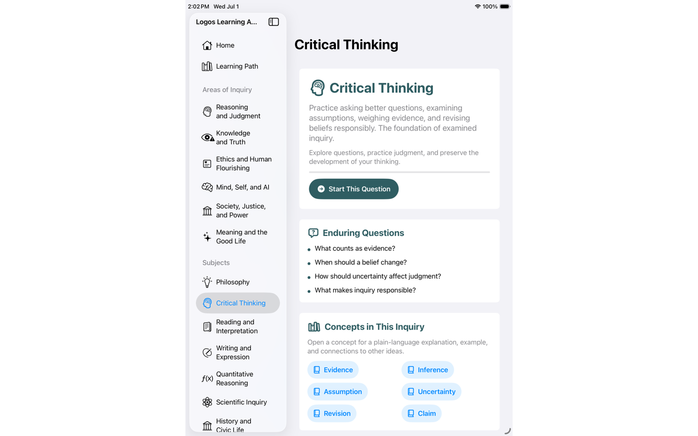

Educational aim
Translate major ethical ideas into tools that are more interactive, accessible, and usable in real learning contexts.
Ethics • AI tools • Philosophy
This project area brings philosophical reasoning into guided educational interfaces that help learners practice ethical reflection and careful thinking.

Overview
The project direction treats philosophy not as static content but as a skill that can be practiced. The tools are meant to help learners ask better questions and think more carefully about real cases.